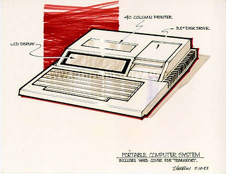

Another example of a ruggedized laptop with hard cover for transport, also
incorporating a built-in 3.5" disk drive and also a 40 column printer,
although only useful for calculations and other simpler print jobs and
not some much for being used as an all-in-one portable wordprocessor, the
system would still have carried many benefits once hooked to a full sized
80 column printer or good for accounts and number crunchers as well as
programmers.